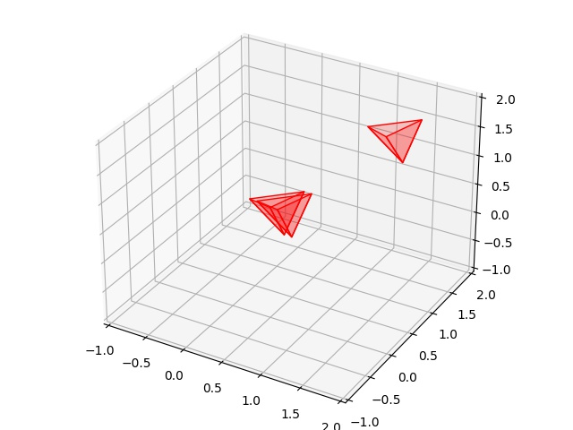

AABB, Üçgen Kesişmesi, Hızlı Çarpışma Saptaması
import sys; sys.path.append("randall")
import AABB
class Tetrahedron(AABB.IAABB):
def __init__(self,offset):
self.offset = offset
self.base_tri = np.array([[ 0.2309401, 1.2309401, 0.2309401],
[-0.2309401, 1.2309401, -0.2309401],
[ 0.2309401, 0.7690599, -0.2309401],
[-0.2309401, 0.7690599, 0.2309401]])
def get_triangles(self):
res = []
res.append(self.base_tri[0:3,:] + self.offset)
res.append(self.base_tri[1:4,:] + self.offset)
last = np.vstack((self.base_tri[2:4,:],self.base_tri[0,:]))
res.append(last + self.offset)
return res
def plot(self,ax):
tris = self.get_triangles()
for x in tris:
tri = a3.art3d.Poly3DCollection([x])
tri.set_edgecolor('k')
tri.set_color('red')
tri.set_alpha(0.2)
ax.add_collection3d(tri)
def __repr__(self):
return f"Tetrahedron {self.offset}"
def get_aabb(self):
mins = np.min(self.offset + self.base_tri,axis=0)
maxs = np.max(self.offset + self.base_tri,axis=0)
x,y,z,w,h,d = list(mins) + list(maxs)
return AABB.AABB(x,y,z,w,h,d)
tree = AABB.AABBTree(initial_size=4)
t1 = Tetrahedron(offset=np.array([0,0,0]))
tree.insert_object(t1)
t2 = Tetrahedron(offset=np.array([0.1,0,0]))
tree.insert_object(t2)
t3 = Tetrahedron(offset=np.array([1,1,1]))
tree.insert_object(t3)
overlaps1 = tree.query_overlaps(t1)
print ('results')
for obj in overlaps1: print(f" - Overlaps with {obj}") # Should report box2
results
- Overlaps with Tetrahedron [0.1 0. 0. ]
overlaps2 = tree.query_overlaps(t1)
print ('results')
for obj in overlaps1: print(f" - Overlaps with {obj}") # Should report box2
results
- Overlaps with Tetrahedron [0.1 0. 0. ]
import mpl_toolkits.mplot3d as a3
import matplotlib.colors as colors
import pylab as pl
ax = a3.Axes3D(pl.figure())
t1.plot(ax)
t2.plot(ax)
t3.plot(ax)
ax.set_xlim(-1,2)
ax.set_ylim(-1,2)
ax.set_zlim(-1,2)
plt.savefig('tetra_01.jpg')

[devam edecek]
Kaynaklar
[1] Bayramli, Green'in Teorisi, Düzlem Kesişmeleri, Eğriler, https://burakbayramli.github.io/dersblog/calcmulti/calcmulti75app/greeninteorisiduzlemkesismeleri_egriler.html
[2] Randall, AABB Ağaçları ile Çarpışma Saptamasına Giriş, aabb-randall-tr.html
Yukarı